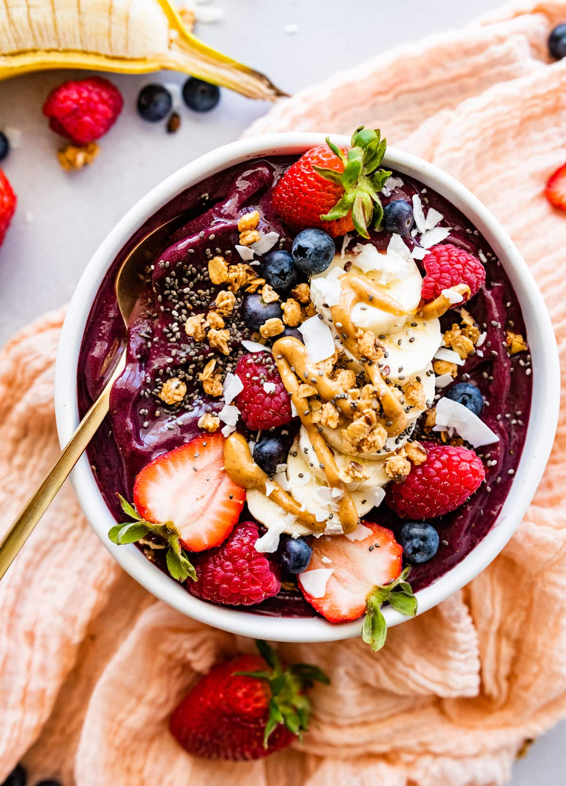

Health & Lifestyle
Acai Bowl
Experience pure bliss with our Acai Bowls
— a delicious fusion of acai goodness, fresh fruits,
and delightful toppings. Your perfect, healthy indulgence
awaits!
 4 out of 5 Stars
4 out of 5 Stars

Prep Time
Cook Time
Total Time
5 min
----------
5 min
Ingredients
- 1 packet of frozen Acai puree (unsweetened)
- 1/2 cup frozen mixed berries (such as strawberries, blueberries, or raspberries)
- 1/2 banana, frozen
- 1/2 cup almond milk (or any milk of your choice)
- 1 tablespoon honey or agave syrup (optional, for sweetness)
- Toppings: Granola, sliced fresh fruits (such as banana, strawberry, kiwi), shredded coconut, chia seeds, and nuts.
Instructions
- Thaw a packet of frozen Acai under warm water and break it into smaller pieces.
- In a blender, combine Acai pieces, frozen mixed berries, frozen banana, and almond milk.
- Blend until smooth.
- Adjust sweetness with honey or agave syrup (optional), and blend again.
- Pour the blended Acai mixture into a bowl.
- Top with granola, sliced fresh fruits, shredded coconut, chia seeds, and nuts.
- Serve and enjoy your delicious Acai Bowl!
3 Comments